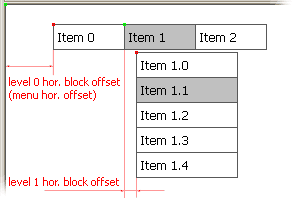

| CONTEXT HELP |
|---|
| Block Horizontal Offset |
|
 Horizontal distance in pixels between the origin point (green square on the illustration above) and the menu block (red square). Horizontal offset of the root level defines the position of the menu on the page. Use "Menu Hor. Offset" field of "Edit Menu Settings" form to control this parameter. For sub-menus the origin point is the top left corner of the parent item. Usually horizontal offset equals or slightly less than the width of the menu items in the parent level if parent level is vertical. With horizontal parent level the offset should usually be 0 or some small number. Horizontal block offset can be either positive (shift to right) or negative (shift to left) number. This setting is shared among all menu items on the same level/depth. In Tigra Menu PRO and Tigra Menu GOLD the horizontal block offset can be set for each menu block independently. By default the offset is inherited from the parent level |